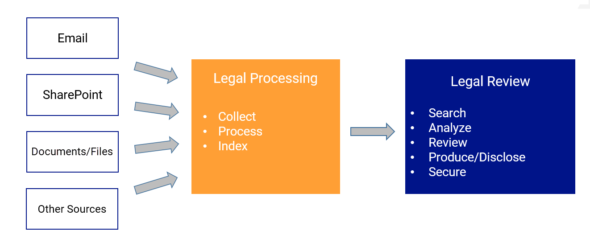

Identification and Collection Methods
Collection & Processing
The purpose of legal processing during collection is to
obtain and enhance electronically stored documents from various sources and
then make the processed documents available for review and related tasks in
ZyLAB ONE Legal Review.
Legal Processing has two major purposes:
- Reduce the volume of Electronically Stored Information (ESI) that has been
preserved and collected.
- Convert the ESI, if necessary, to forms more suitable for Review and Analysis.
Collection Tools
- DIY Upload in ZyLAB ONE
Users can simply drag and drop data directly into
ZyLAB ONE for processing or connect directly to Exchange or Google G Suite.
- ZyLAB’s on-premises Legal Processing* tool
Direct connection to source data,
including file systems, email and sharepoint.
* Only available in ZyLAB
on-premise client environments.
Collection/Processing - ZyLAB Legal Processing

Data uploaded via the Upload feature in ZyLAB Legal Review goes through the same processing steps as data uploaded through the ZyLAB Legal Processing module.
Define the Collection Parameters
Best practices to consider prior to beginning the collection:
- Determine key time frames
Based on the discovery request, determine the relevant time period for the matter
and limit the collection to that timeframe.
- Identify key players/custodians
Who in the company may have potentially relevant data? Should identification and collection be based upon department, geography, job function or other criteria? Consider using Custodian Questionnaires. Can the data be deduplicated across sources or just within a single custodian?
- Map the client's information systems
What are the data sources and how is the infrastructure designed? Is the data accessible and does the ZyLAB Legal Processing system have access to collect that data?
- Identify potentially relevant file types
Are only certain types of data relevant? Can all other types be excluded from the collection?
- Targeted vs. Full Collections
Custodians and Sources
- Custodian
The person(s) having administrative control of a document or electronic file; for example, the custodian of an email is the owner of the mailbox which contains the message. A Custodian may also be the Department or other entities.
- Source
Specific resources such as the file system, Exchange, SharePoint, that data will be collected from.
-
Consideration should be given to how the Custodians and Sources are identified in order to make the review process as efficient as possible.
Collection Methods and Considerations
ZyLAB ONE’s powerful Search and Review features can be fully leveraged on
data that has been collected and processed within the system.
-
Not always necessary or advisable to collect all data.
- Considerations:
-
Time, resource availability, efficiency, security
-
Full Collection vs. Targeted Collection
-
Multiple collectors are available for similar data types.
-
Decisions on collection methods may differ from matter to matter.
Full Collection
ZyLAB collects all data from a target source (examples):
- Entire User mailboxes
- Complete SharePoint Document Libraries
- User Folders or Department File Shar
Considerations:
- Benefits: All data is processed, searchable, secured and ready for review in the ZyLAB ONE eDiscovery System'
- Drawbacks: Over collection of data may unnecessarily consume time and resources; System architecture must support.
Targeted Collection
Data is Scoped and Targeted prior to Collection (examples):
-
User Mailbox filtered by date
-
Searched emails exported as PST
-
Target Specific Subfolders of Department or User
Considerations:
- Benefits: Data collection and processing is faster (presumably less data); Focus on most relevant data; Quicker review time.
- Drawbacks: Requires analysis outside of ZyLAB Software.
Email (Exchange) Collection Options
Attention: With the deprecation of Microsoft's Basic authentication, users must instead configure Exchange to use OAuth authentication—see Configure Exchange Online Upload/Collection Using OAuth Authentication for more information.
- Full Collection
Collect entire mailbox accounts with ZyLAB Exchange Collector.
- Targeted Collection Options
- Direct Collection with ZyLAB Exchange Collector
- Filter by Folder (Inbox, Tasks, Sent, Notes, Junk Email, Journal, Drafts, Deleted, Contacts, etc…)
- Date range and key word of subject/body
- (Also Recoverable Items and Archive Folder)
- PST Collection
- Search Exchange Mailbox (with inherent Exchange eDiscovery functionality or direct access to mailbox is required)
- Export to PST
- Collect PST using ZyLAB File System Collector or Web interface (Upload in Legal Review)
Loose File Collection Options
- Full Collection
Use ZyLAB File System Collector OR ZyLAB ONE’s DIY Upload to point to User Folders, individual files, or Department Fileshares.
- Targeted Collection
Use ZyLAB File System Collector OR ZyLAB ONE’s DIY Upload to point to User Folders, individual files, or Department Fileshares.- Identify Specific Target Folders
- Filter by date range and specify file-types to collect
- Collect data using ZyLAB File System Collector or Web interface (Upload in Legal Review)
Sharepoint Collection Options
- Full Collection
Identify and Collect entire Document Library (SharePoint Collector).
- Targeted Collection
- Direct Collect (SharePoint Collector)
Filter Date Range, Versions, Types of Files to Collect
- ZIP File Collection (File System Collector)
- Search Documents in SharePoint
- Download Files (as individual files or ZIP file)
- Collect data using ZyLAB File System Collector
or Web interface (Upload in Legal Review)
Collection Considerations
-
As much as possible, Targeted Collections are recommended
-
Legal Processing Users may find File System Collector easiest to use (on-prem)
- Legal Processing Users will require access to all data